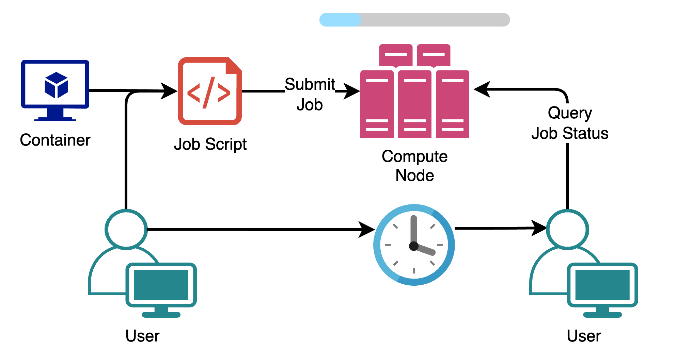

#!/bin/bash # the shell language when run outside of the job scheduler
# # lines starting with #$ is an instruction to the job scheduler
#$ -S /bin/bash # the shell language when run via the job scheduler [IMPORTANT]
#$ -cwd # job should run in the current working directory
#$ -j y # STDERR and STDOUT should be joined
#$ -l mem_free=1G # job requires up to 1 GiB of RAM per slot (core)
#$ -l scratch=2G # job requires up to 2 GiB of local /scratch space
#$ -l h_rt=1:00:00 # job requires up to 1 hour of runtime
#$ -r y # if job crashes, it should be restarted
date
hostname
## End-of-job summary, if running as a job
[[ -n "$JOB_ID" ]] && qstat -j "$JOB_ID" # This is useful for debugging and usage purposes,
# e.g. "did my job exceed its memory request?"Working on Wynton
Part 2
Natalie Gill
Gladstone Bioinformatics Core
October 03, 2025
Introductions
Natalie Gill
Bioinformatician II
Target Audience
- Prior experience with UNIX command-line
Part 2:
- Submitting Compute Jobs
- Array Jobs
- GPU Jobs
- Running Pipelines
- Jupyter Notebooks
- RStudio Server
- Advanced Tips and Tricks
- How to get help
Compute Jobs
Submission Script - Basics
- Download this example job submission script
- Read the full Wynton job submission guide
- Wynton uses the Sun Grid Engine job scheduler
Submission Script - Apptainer
- Download the example job submission script that uses a container
curl -s -L -o apptainer_submission_script.sh 'https://www.dropbox.com/scl/fi/zzl9fnfcoxu3pyrx5ffd1/apptainer_submission_script.sh?rlkey=w05e18ahw4hvbvaucac379za9&dl=1'Submission Script - Apptainer
- Paths that the container needs read/write access to need to be mounted with APPTAINER_BINDPATH
#!/bin/bash
#$ -S /bin/bash # the shell language when run via the job scheduler
#$ -cwd # job should run in the current working directory
#$ -j y # STDERR and STDOUT should be joined
#$ -l mem_free=1G # job requires up to 1 GiB of RAM per slot
#$ -l scratch=2G # job requires up to 2 GiB of local /scratch space
#$ -l h_rt=1:00:00 # job requires up to 1 hour of runtime
# Mount the current directory to the container
# Any directroy that needs to be accessed by the container should be mounted
directory=$(pwd)
export APPTAINER_BINDPATH="$directory"
h=$(hostname)
singularity run hello-world_1.0.sif figlet $h > $directory/hello.txt
[[ -n "$JOB_ID" ]] && qstat -j "$JOB_ID"Parallel Processing Jobs
By default jobs run on a single core
Multicore jobs must run in a SGE parallel environment (PE) and tell SGE how many cores the job will use
Do not use more cores than requested
There are four parallel environments on Wynton:
- smp: for single-host parallel jobs using Symmetric multiprocessing (SMP)
- mpi: for multiple-host parallel jobs based on MPI parallelization
- mpi_onehost: for single-host parallel jobs based on MPI parallelization
- mpi-8: for multi-threaded multi-host jobs based on MPI parallelization
Example Parallel Job
- The simplest parallel environment on Wynton is smp, a single node with n cores
- Download this example smp job submission script
#!/bin/bash
#$ -S /bin/bash
#$ -cwd
#$ -j y
#$ -pe smp 4 # 4 cores on a single node
#$ -l mem_free=2G # 2 GiB of RAM per slot (core), so 8 GiB total
#$ -l scratch=5G # 5 GiB of local /scratch space
#$ -l h_rt=08:00:00
# Code that requires 4 cores
# **Specify the number of cores as ${NSLOTS}**
[[ -n "$JOB_ID" ]] && qstat -j "$JOB_ID"Array Jobs
- This is a good option if the script you want to run operates on discrete sets of data
- e.g. sample or chromosome
- Array jobs allow one file to create multiple jobs that are indexed by a task ID
- Download the example array job submission folder
curl -L -o array_job_example.zip https://www.dropbox.com/scl/fo/j0muxevls22ylwxqe76ws/ANFEeLzPH4D_GmHpldiVCTg?rlkey=h6y0ginsrtlsc02beb65zbysh&dl=1Array Jobs
- Unzip it
unzip array_job_example.zip -d array_job_example- Follow along with the demo
GPU Jobs
- To run a GPU job, specify -q gpu.q (queue) as a GPU queue
- Other GPU queues may be available to you depending on your lab
- It is important to specify the GPU using the SGE_GPU variable so that your job uses its assigned GPU
- For CUDA based tools, add export CUDA_VISIBLE_DEVICES=$SGE_GPU to your submission script
- GPU jobs must include a runtime request or they will be removed from the queue
Submitting and Querying jobs
- Use qsub to submit jobs
[alice@dev1 ~]$ qsub job1.sh
Your job 714888 ("job1.sh") has been submitted- Use qstat to check the status of your jobs
[alice@dev1 ~]$ qstat
job-ID prior name user state submit/start at queue slots ja-task-ID
-----------------------------------------------------------------------------------------------------------------
714888 0.06532 job1 alice r 03/25/2024 19:54:18 member.q@msg-hmio1 1
714889 0.06532 job2 alice r 03/25/2024 19:54:19 member.q@msg-hmio1 1Read the querying jobs Wynton documentation for more information.
Estimating Job Resources
- Try to estimate the amount of RAM needed using a small test dataset
- Request a little more RAM than you need to avoid having your job cancelled
- Check on jobs you are running for the first time with qstat -j
to make sure they are not going over
Poll 3
Any submitted job to compute nodes can also be run on development nodes.
- True
- False
Running Pipelines
Nextflow RNA-seq
- Scientific workflow system with a community maintained set of core bioinformatics analysis pipelines
- The most commonly used one is the RNA-seq pipeline

Example - RNA-seq Pipeline
Do not run this during the workshop as it will fill up the Wynton SGE queue
- Download the testing script
- Runs a minimal test on the RNA-seq pipeline
- Download the config file
- Configures nextflow to use the SGE job scheduler and sets limits on compute job resources for each process
- Put these in the same directory (do not use your user home directory for this) and run the script in a screen/tmux session
- When not running the test, the -profile should be apptainer
Jupyter Notebooks
Installing Jupyter Notebooks
- The preferred way to install and use Jupyter notebooks on Wynton is though pip, not conda
python3 -m pip install --user notebook- Jupyter notebooks can only be run on development nodes
- See the Wynton python documentation for more info on managing python environments on Wynton
Running Jupyter Notebooks - Step 1
- You cannot connect from outside Wynton HPC directly to a development node
- Instead we need to use SSH port forwarding to establish the connection with a local web browser
- Find an available TCP port:
[alice@dev1 ~]$ module load CBI port4me
[alice@dev1 ~]$ port4me --tool=jupyter
47467Note the port number returned by port4me, you will need this later.
Running Jupyter Notebooks - Step 2
- Launch Jupyter notebook using the port numer from step 1
[alice@dev1]$ jupyter notebook --no-browser --port 47467
[I 2024-03-20 14:48:45.693 ServerApp] jupyter_lsp | extension was successfully linked.
[I 2024-03-20 14:48:45.698 ServerApp] jupyter_server_terminals | extension was successfully linked.
[I 2024-03-20 14:48:45.703 ServerApp] jupyterlab | extension was successfully linked.
[I 2024-03-20 14:48:45.708 ServerApp] notebook | extension was successfully linked.
[I 2024-03-20 14:48:46.577 ServerApp] notebook_shim | extension was successfully linked.
[I 2024-03-20 14:48:46.666 ServerApp] notebook_shim | extension was successfully loaded.
[I 2024-03-20 14:48:46.668 ServerApp] jupyter_lsp | extension was successfully loaded.
[I 2024-03-20 14:48:46.669 ServerApp] jupyter_server_terminals | extension was successfully loaded.
[I 2024-03-20 14:48:46.675 LabApp] JupyterLab extension loaded from /wynton/home/boblab/alice/.local/lib/python3.11/site-packages/jupyterlab
[I 2024-03-20 14:48:46.675 LabApp] JupyterLab application directory is /wynton/home/boblab/alice/.local/share/jupyter/lab
[I 2024-03-20 14:48:46.677 LabApp] Extension Manager is pypi.
[I 2024-03-20 14:48:46.707 ServerApp] jupyterlab | extension was successfully loaded.
[I 2024-03-20 14:48:46.711 ServerApp] notebook | extension was successfully loaded.
[I 2024-03-20 14:48:46.712 ServerApp] Serving notebooks from local directory: /wynton/home/boblab/alice
[I 2024-03-20 14:48:46.712 ServerApp] Jupyter Server 2.13.0 is running at:
[I 2024-03-20 14:48:46.712 ServerApp] http://localhost:44214/tree?token=8e37f8d62fca6a1c9b2da429f27df5ebcec706a808c3a8f2
[I 2024-03-20 14:48:46.712 ServerApp] http://127.0.0.1:44214/tree?token=8e37f8d62fca6a1c9b2da429f27df5ebcec706a808c3a8f2
[I 2024-03-20 14:48:46.712 ServerApp] Use Control-C to stop this server and shut down all kernels (twice to skip confirmation).
[C 2024-03-20 14:48:46.725 ServerApp]
To access the server, open this file in a browser:
file:///wynton/home/boblab/alice/.local/share/jupyter/runtime/jpserver-2853162-open.html
Or copy and paste one of these URLs:
http://localhost:44214/tree?token=8e37f8d62fca6a1c9b2da429f27df5ebcec706a808c3a8f2
http://127.0.0.1:44214/tree?token=8e37f8d62fca6a1c9b2da429f27df5ebcec706a808c3a8f2Running Jupyter Notebooks - Step 3
- Set up SSH port forwarding on your local machine in a separate terminal, leave both terminals open
{local}$ ssh -J alice@log1.wynton.ucsf.edu -L 47467:localhost:47467 alice@dev1
...
[alice@dev1 ~]$ The notebook should now be available at the URL from step 2
RStudio Server
RStudio Server
- RStudio server is already available in the CBI module
- This allows you to set up a personal RStudio instance that only you can access
- Requires two separate SSH connections to the cluster:
- One to launch RStudio Server
- One to connect to it
RStudio Server - Step 1
- Launch your own RStudio Server instance
[alice@dev1 ~]$ module load CBI rstudio-server-controller
[alice@dev1 ~]$ rsc start
alice, your personal RStudio Server 2023.09.1-494 running R 4.3.2 is available on:
<http://127.0.0.1:20612>
Importantly, if you are running from a remote machine without direct access
to dev1, you need to set up SSH port forwarding first, which you can do by
running:
ssh -L 20612:dev1:20612 alice@log1.wynton.ucsf.edu
in a second terminal from your local computer.
Any R session started times out after being idle for 120 minutes.
WARNING: You now have 10 minutes, until 2023-11-15 17:06:50-08:00, to
connect and log in to the RStudio Server before everything times out.
Your one-time random password for RStudio Server is: y+IWo7rfl7Z7MRCPI3Z4Note the password and URL, they will be needed to log in to the server instance.
RStudio Server - Step 2
- Connect to your personal RStudio Server instance from your local machine in a separate terminal
{local}$ ssh -L 20612:dev1:20612 alice@log1.wynton.ucsf.edu
alice1@log1.wynton.ucsf.edu:s password: XXXXXXXXXXXXXXXXXXX
[alice@log1 ~]$ RStudio Server - Step 3
- Open RStudio Server in your local web browser
- Open the link from step 1
- Enter your Wynton user name
- Enter the password from step 1
How to Get Help
Wynton Questions
- Follow the Wynton question checklist
- Slack
- ucsf-wynton
- Sign-up using a UCSF email address
- Email support if that does not work
- Zoom office hours every Tuesday at 11-12pm
- Zoom URL in the message-of-the-day (MOTD) that you get when you log into Wynton
Bioinformatics Questions
For any bioinformatics specific questions feel free to reach out to the Gladstone Bioinformatics Core.
- Slack channel #questions-about-bioinformatics
- Contact us at the email above to be added to the channel
Advanced Tips and Tricks
BeeGFS
- Wynton uses a parallel shared file system called BeeGFS
- The files are stored as “chunks” spread across many different servers
- BeeGFS has multiple services that work together to manage the file system
- Storage (stores the chunks)
- Metadata (tracks the chunks and information about their file)
- Management (tracks all of the services)
- Client (provides linux access to the file system)
BeeGFS - Advantages
- High throughput
- Redundancy can be built in by mirroring services
- Adding new storage is fast and does not require downtime
BeeGFS - Caveats
- For any client node, performance is limited by the network bandwidth of that node
- Network latency becomes extremely important for all metadata requests
- Certain input/output patterns can be problematic
BeeGFS - I/O patterns
- Anything that requires lots of metadata operations can feel slow
- e.g: lots of writes to the same directory and lots of file lookups and directory searches (conda)
- Keep the number of reads and writes to a single directory to a reasonable number
BeeGFS - Takehome Message
- Prefer fewer, large files over many small ones
- Distribute reading and writing over several directories
- Use local scratch (/scratch) when possible
- Don’t include anything in /wynton in your default LD_LIBRARY_PATH
- If using conda, putting the conda application inside a Apptainer (formerly singularity) container will result in better performance
Custom Containers
Motivation
- Compute heavy jobs (high RAM, multiple cores) should be run on compute nodes
- Containers allow us to make additional software available to the compute nodes
- Also allows the use of software that might be hard to install on Rocky 8 Linux
- Improves reproducibility

Dockerfile Basics
- Dockerfiles contain instructions to build an image in layers
- Layers are added using Dockerfile instruction syntax
- Images are built by navigating to the directory that contains the Dockerfile and running:
docker build .Dockerfile Instructions
- First instruction is always FROM which specifies the base image
- Base images are a starting point with some basics already installed like the OS and build tools, find them on DockerHub
- RUN : Use before running any shell commands
- SHELL : Set the shell
- USER : Set the user (within the image)
- CMD : Set the default instruction to be run by the image
- COPY : COPY files into the image
See the Dockerfile documentation for a full list of instructions
Example Dockerfile
- Click here to download the example Dockerfile
- Open in your preffered text editor
# Bioconductor base image gives us access to a lot of bioinformatics tools and R packages.
FROM bioconductor/bioconductor_docker:RELEASE_3_17
# Shell options, we want to exit if any command fails
SHELL ["/bin/bash", "-o", "pipefail", "-c"]
# Root permissions are required to install packages
USER root
# Install any UNIX packages you need
# First we update the package list and then install GNU make
# We clean up after ourselves to reduce the image size
RUN apt-get update && apt-get upgrade -y \
&& apt-get install -y --no-install-recommends make \
&& apt-get clean \
&& rm -rf /var/lib/apt/lists/*
# Install Seurat and harmony
RUN Rscript -e 'install.packages(c("Seurat","harmony"))'
# Check if installs worked
RUN Rscript -e 'lapply(c("Seurat","harmony"), library, character.only = TRUE)'
# Run container as non-root to avoid permission issues
RUN groupadd -g 10001 notroot && \
useradd -u 10000 -g notroot notroot
# Switch to the non-root user
USER notroot:notroot
# Default command to run when the container starts
CMD ["/bin/bash"]
# Copy dockerfile into the image (optional, but can be useful for reproducibility)
COPY Dockerfile /DockerfileBuilding Example Image
- Do not run this during the workshop
- It requires a lot of RAM
- On macOS, make sure you have the Docker Desktop App running
- We can provide an additional argument to the build command, -t, to set the name of the docker image
- We can add version tags after the name using “:”
docker build -t docker_hub_user/seurat-harmony:1.0 .Pushing Images to DockerHub
- Make sure you are signed in to your DockerHub account locally (Docker Desktop for macOS)
- The image name must start with your user name
docker push docker_hub_user/seurat-harmony:1.0- These can then be “pulled” on to Wynton as apptainer image files (image must be public)
[alice@dev1 ~]$ apptainer pull docker://docker_hub_user/seurat-harmony:1.0Notes on Building Custom Images
- Time consuming process and can use a lot of RAM on your local machine
- A good base image can save you a lot of time
- You must run apt-get update and apt-get install in the same command
- Otherwise you will encounter caching issues
- These are only for Ubuntu, for other OS run the equivalent package list retrieval and install commands together
- Remember to use apt-get install -y
- You will have no control over the process while it’s building
End of Part 2
Thank You!
- Please take some time to fill out the workshop survey:
Upcoming Data Science Training Program Workshops
Intermediate RNA-Seq Analysis Using R
October 6, 2025 1:00-4:00pm PDT
Introduction to Pathway Analysis
October 16, 2025 1:00-4:00pm PDT
Statistics of Enrichment Analysis Methods
October 20-October 21, 2025 1:00-3:00pm PDT
Single Cell RNA-Seq Analysis
October 27-October 28, 2025 9:00-4:00pm PDT